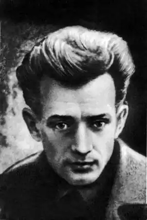
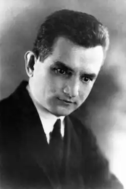

Євген Плужник (1898-1936)
Євген Павлович Плужник народився 26 грудня 1898 року в слобідці Кантемирівка Богучарського повіту Воронезької губернії в сім'ї дрібного торговця. Вчився у сільській школі, потім у кількох гімназіях — в Богучарі, Ростові, Боброві. 1918 року разом з родиною переїхав на Полтавщину. Під час громадянської війни вчителював у селі Багачка Миргородського повіту на Полтавщині. Навчаючи дітей, він одночасно поглиблював і свої знання. Але самоосвіта його не задовольняла, і він їде до Києва, де навчається у Ветеринарно-зоотехнічному інституті. Невдовзі він вступає до Київського музично-драматичного інституту ім. Лисенка. Акторські здібності Плужника, його гумор та дотепність цінують викладачі й товариші, пророкують перспективне сценічне майбутнє.
1923 року Микола Зеров залучає Євгена Плужника до Асоціації письменників (Аспис), що об'єднувала тоді всю "непролетарську" літературу Києва. 1924 року Плужник стає членом письменницької групи "Ланка", яка 1926 року перетворюється на "Марс" (майстерня революційного слова). На чолі "Марсу", як і "Ланки", стояли Борис Антоненко-Давидович, Валеріан Підмогильний, Григорій Косинка. "Марс" вважали за київську неофіційну філію харківської ВАПЛІТЕ. Обидві організації були розгромлені і ліквідовані одночасно. Перші українські вірші Є.Плужника (в гімназійний період він писав російською) були опубліковані 1923 року в київському журналі "Глобус" під псевдонімом Кантемирянин (від назви рідного села) — Плужник ще не наважився перші поетичні спроби підписати власним прізвищем. 1926 року завдяки дружині поета, Галині Коваленко, вийшла в світ перша книжка віршів Євгена Плужника під назвою "Дні". Євген "все писав, писав, — розповідала вона, — а ми бідно жили, на шостому поверсі, одна кімнатка, а він все писав і засував то в піч, то під матрац. Одного разу він вийшов. Викликали його… Я собі подумала так: якщо я не зможу оцінити його поезію, то викраду. Понесу я Юрієві Меженкові, хай він скаже — він же фахівець, чи це чогось варте. Потім Меженко викликає мене до телефону і каже: "Знаєте, що ви принесли? Ви принесли вірші такого поета, якого ми в житті будемо довго чекати і дай нам Бог, щоб ми дочекалися". Через рік виходить друга і остання прижиттєва поетична збірка Є.Плужника "Рання осінь", яка мала прихильну рецензію Ю.Меженка, а іншими розкритикована. Збірка поезій під назвою "Рівновага", яку Плужник підготував до друку і датована 33-м роком, лишилася ненадрукованою: разом з багатьма своїми друзями й колегами по перу він потрапив у жорна сталінської репресивної машини. Ці вірші увійшли до "Вибраних поезій" Є. Плужника 1966 року. Усього десять років тривала літературна діяльність цього талановитого поета. В українську поезію середини 1920-х років Євген Павлович Плужник увійшов як співець гуманізму. Поезії його сповнені трагічного звучання: проповідям класової ненависті й безжальному братовбивству він протиставляє ідею абсолютної цінності людського життя, протест проти бездумної революційної жорстокості. Він прагнув конкретного гуманізму, зверненого до кожної людини, що опинилася у вирі терору й репресій і була безсилою захистити свою честь, гідність, зрештою, саме життя. Поет-філософ Плужник розкриває протиріччя між метою і здобутком, між справжнім сенсом людського життя і його нікчемними зовнішніми виявами. Відразу після розстрілу двадцяти восьми "ворогів народу", серед яких були друзі Є.Плужника по "Ланці" і "Марсу", митець потрапляє в "чергу" призначених до розстрілу. Ордер на арешт і трус у його квартирі був виписаний 4 грудня 1934 року. Але ще 2 грудня уповноважена секретно-політичного відділу НКВС УРСР Гольдман скомпонувала постанову, в якій Плужник звинувачувався в тому, що він "є членом контрреволюційної організації, був зв'язаний з націоналістичною групою письменників, вів контрреволюційну роботу. Знав про практичну діяльність організації по підготовці терактів". На підставі цього зроблено висновок: "перебування його на волі є соціально небезпечним", а тому Євген Плужник підлягає "утриманню в спецкорпусі Київського обласного управління НКВС". Арешт Плужник зустрів спокійно. Після безпідставних ув'язнень його колег-літераторів, його власний арешт не став несподіванкою для нього. 25 березня 1935 року Євгену Павловичу Плужнику оголосили вирок: смертна кара, яку пізніше було замінено десятьма роками заслання. Проте десять років заслання на Північ з суворими умовами полярного клімату та напівголодне життя в'язничних казарм для людини, хворої на легені, — означали вірну смерть. Заміна розстрілу на заслання не давала поетові жодних шансів на порятунок. Та все ж, того дня, коли йому повідомили про зміну вироку, він зрадів. У листі, написаному до дружини під першим враженням одержаної звістки, Євген Плужник писав: "Галча моє! Це не дрібничка, що пишу я тобі чорнилом, але разом з тим — це величезну має вагу: я хочу, щоб надовго, на все своє й моє життя, зберегла цей лист — найрадісніший, вір мені, з усіх листів, що я коли-небудь писав тобі. Галю, ти ж знаєш, як рідко я радів і як багато треба для того, і от тепер, коли я пишу тобі, що сповнює мені груди почуття радости — так це значить, що сталося в моїм житті те, чому й ти разом зо мною — я знаю — радітимеш. У мене мало зараз потрібних слів — мені б тільки хотілося пригорнути тебе так міцно, щоб відчула ти всім єством твоїм, що пригортає тебе чоловік, у якого буяє життєва сила і в м'язах, і в серці, і в думках. Я пишу тобі, а надворі, за вікном, сонце — і мені, їй-богу, так важко стримати себе, щоб не скрикнути: яке хороше життя, яке прекрасне майбутнє в людини, що на це майбутнє має право! Я цілую тебе, рідна моя, і прошу: запам'ятай дату цього листа, як дату найкращого з моїх днів. 28.03.35 Твій Євген". До Соловецьких казематів разом із побратимами по засланню в арештантських вагонах поет вже їхати не міг. Його, тяжко хворого, везли окремо. На Соловках він переважно лежав у тюремній лікарні, зрідка писав листи на Україну. Останній його лист датований 26 січня 1936 року. Цей лист Євген Плужник вже продиктував, а дружині лише приписав власною рукою: "Присягаюся тобі, я все одно виживу!" На жаль, це було вже нереальним. Євген Плужник помер 2 лютого 1936 року. 4 серпня 1956 року постановою Військової колегії Верховного Суду СРСР вирок Євгену Павловичу Плужнику скасовано і справу припинено "за відсутністю складу злочину". Твори: Поезії (К., 1988); Вибрані поезії (К., 1966).